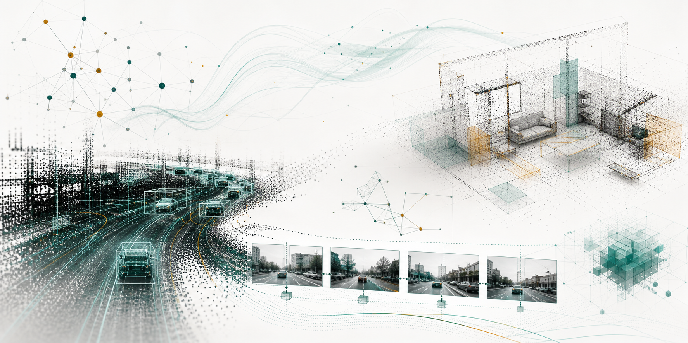

World models under hidden dynamics shifts
Failure-driven latent action refinement for action-conditioned world models, real-time belief revision, inverse action verification, and dynamic candidate reranking.
Shanghai Jiao Tong University
Undergraduate researcher working on world models, 3D scene reconstruction, and robust AI systems for embodied decision-making.
I am a Bachelor of Architecture student at Shanghai Jiao Tong University, with a minor in Computer Science and Technology and graduate-level training through the MITx MicroMasters Program in Statistics and Data Science. My recent work spans hidden-dynamics adaptation, autonomous-driving video world models, compositional scene reconstruction, and domain-specific LLM evaluation.

I focus on AI systems that perceive, predict, and adapt in the physical world, with an emphasis on reliable behavior under hidden shifts and incomplete observations.
Failure-driven latent action refinement for action-conditioned world models, real-time belief revision, inverse action verification, and dynamic candidate reranking.
Video-to-layout understanding, object-centric scene graphs, multi-view partial geometry, and in-place completion from casual indoor videos.
Backdoor vulnerabilities in autonomous-driving video world models and evidence-grounded evaluation of LLMs in high-stakes construction supervision scenarios.
Manuscripts include work under review, submitted work, and ongoing projects in preparation.
Selected projects across embodied AI, spatial intelligence, autonomous driving, and LLM evaluation.
Research Assistant, Prof. YingTian Zou, SJTU SAI.
Research Assistant, Prof. BingBing Ni, SJTU Intelligent Media Lab.
Research Assistant, Prof. Guanjie Zheng, SJTU CILAB.
Research Assistant, Prof. Guanjie Zheng, SJTU CILAB.
Shanghai, China.
Vertical-industry AI Agent company, Shanghai, China.
I am interested in conversations around world models, spatial intelligence, trustworthy AI systems, and research opportunities at the intersection of perception, planning, and adaptation.